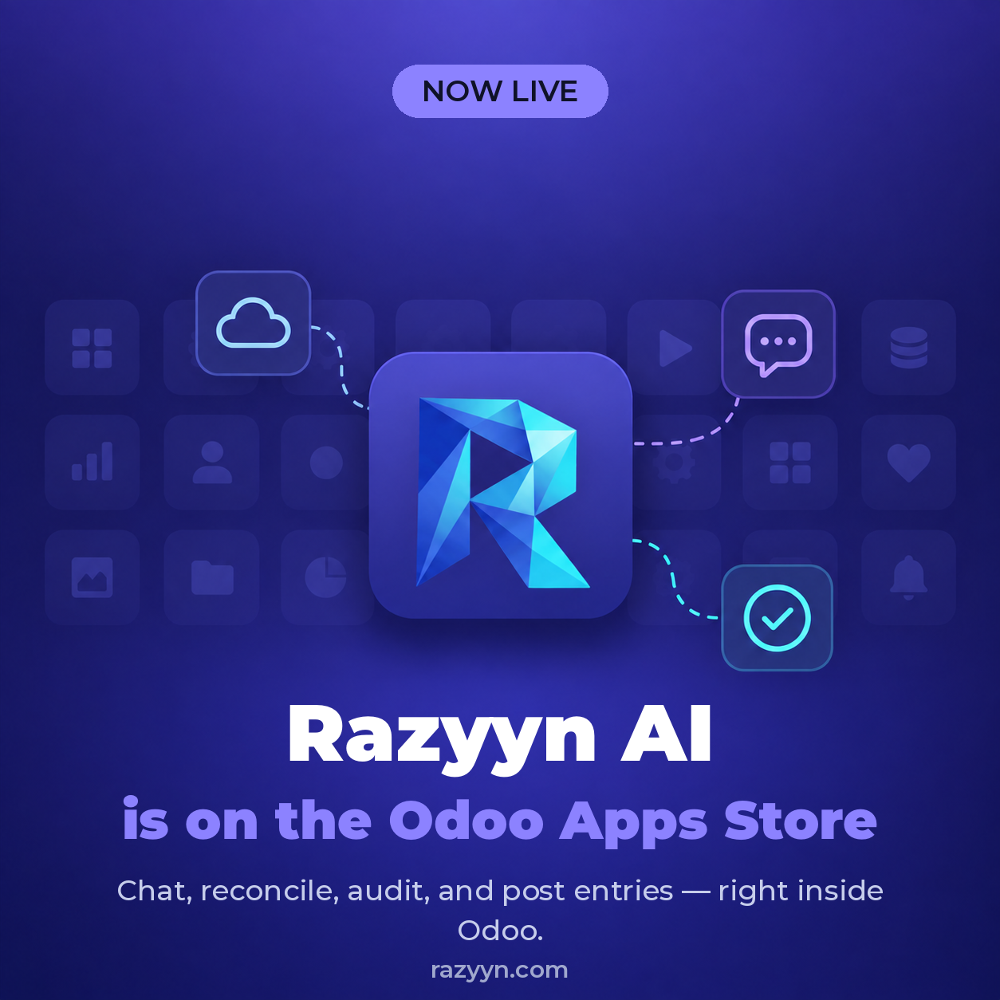
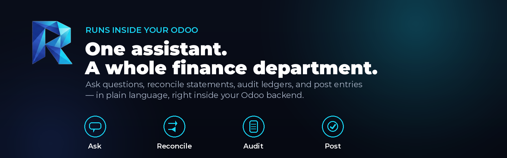
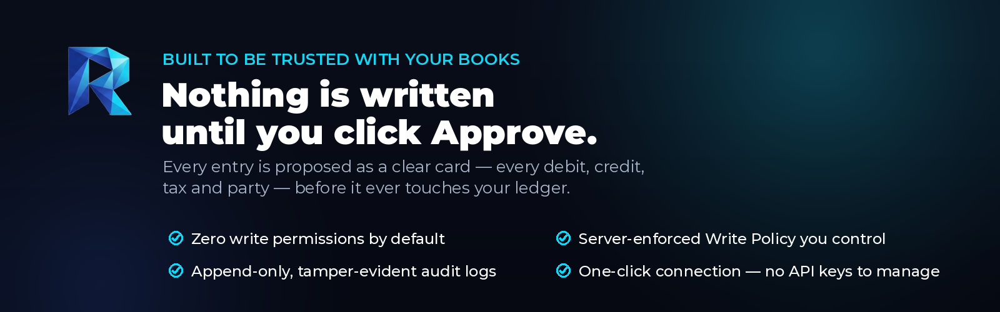

Your complete finance department, powered by AI - inside Odoo.
Razyyn AI adds a natural-language finance team to your Odoo backend. It answers accounting questions, analyses your financials, audits your ledgers, reconciles bank statements, and prepares accounting entries for your review - all without leaving Odoo, and never touching your books without your explicit approval.
It works the way your finance department already does: securely, and in line with your company's own policies, your country's tax and regulatory rules, and standard accounting principles (IFRS / GAAP) - all configurable, so the agent reasons and acts the way your organisation actually operates.

| * | Ask accounting questions & look things up. Chart of accounts, customer balances, vendor status, tax rates, IFRS/GAAP guidance - answered against your live data. |
| * | Reconcile bank statements. Upload a statement and the agent matches it against your ledger, classifying differences and proposing settlement entries. |
| * | Read your documents. Extracts data from uploaded invoices, receipts and contracts (PDF, DOCX, CSV, Excel, images) - on your own server. |
| * | Prepare and post entries - with your approval. Journal entries, payments, customer invoices, vendor bills and more are proposed as a clear card showing every debit, credit, tax and party. Nothing is written to your books until you click Approve. |
| * | Export & deliver results. Generates PDF, Excel, CSV and TXT deliverables, and can send reports and alerts by Email, Telegram or Slack. |
| * | Zero-credential connection. No API keys to copy or paste - your Odoo connects to Razyyn AI securely in one click. |

| * | Fail-closed by default. Out of the box the agent has zero write permissions. Every write is bound by both your Odoo access rights and a server-enforced Write Policy you control. |
| * | Compliant by configuration. Teach the agent your company's policies, your country's rules and your chart conventions, and every answer, entry and audit finding respects them. |
| * | Append-only, tamper-evident audit logs. Every write the agent makes is recorded, encrypted credentials protect the connection, and strict tenant data isolation keeps every company's books separate. |

| Component | Requirement |
|---|---|
| Odoo | 17.0 or 18.0 |
| Odoo apps | base, mail, web, account |
| Database | PostgreSQL 14+ (Odoo's own requirement) |
| System packages (for OCR) | tesseract-ocr with the language data you need, and poppler-utils |
| A Razyyn account | Free to create at razyyn.com - the agent connects to it in one click after install |
Python dependencies (requests, pytesseract, pdf2image) are fetched
automatically when the module installs - nothing to install by hand.